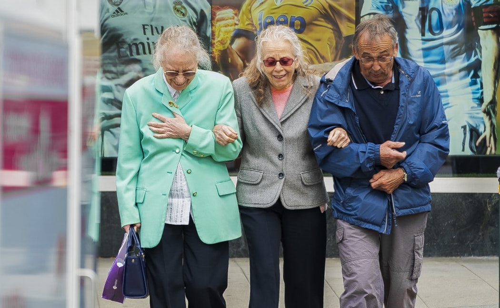
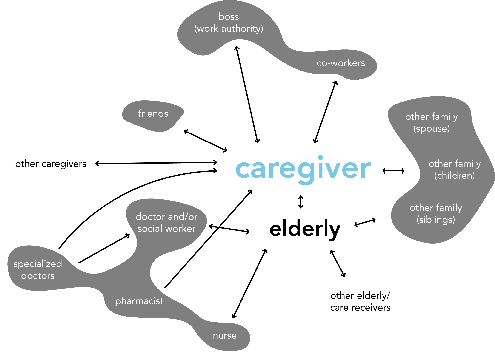
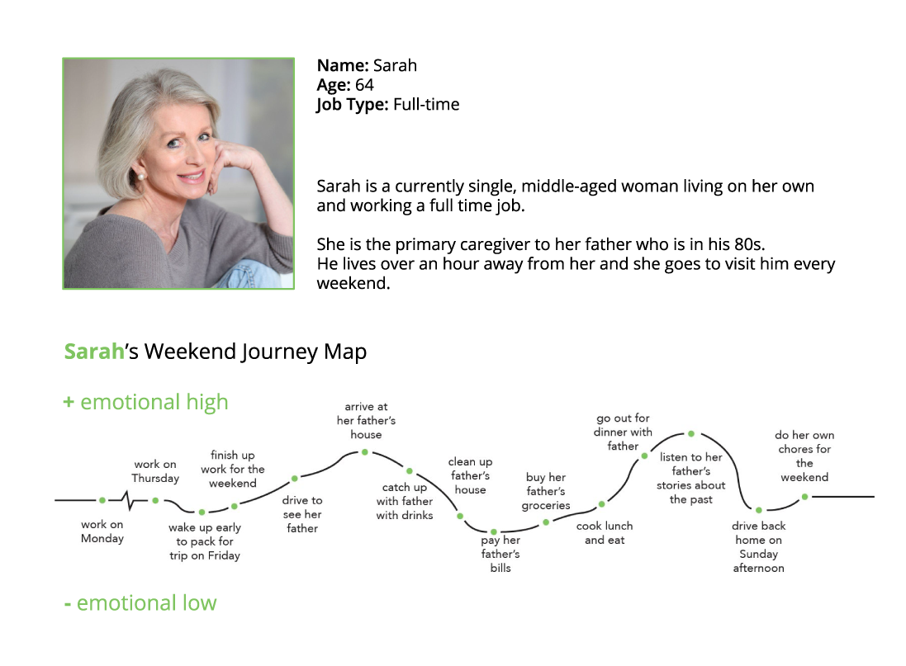
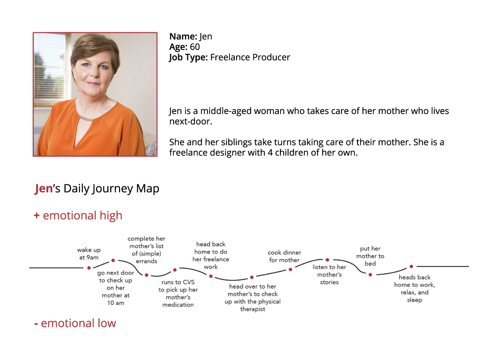

Caregiver Experience
PROJECT BACKGROUND
For this project, we were given a particular target population and we had to identify their problems and needs to create a solution to make their lives easier. Our target population were 60 years old adults caring for their parents or older relatives. We started the process by conducting research and interviews to better understand our target audience. We gathered all our insights to identify 50+ problems and brainstorm 50+ solutions. At the end, we presented our findings and ideas to caregivers and their care receivers to get feedback.
RESEARCH METHOD
We started our research online to learn about the problem space and get a sense of the responsibilities of a typical caregiver. We conducted phone interviews and an in-person interviews to develop empathy for our target audience. Hearing from their experiences had allow us to understand caregiver's worries, feelings, and experience while caring for their loved ones.
SYNTHESIZING THE DATA
Stakeholder map

Personas
After we finished conducting our research, we started creating personas to get a better understanding of the needs and painpoints of caregivers.
 Empathy map

Clustering of painpoints

VISIONING PROCESS
After understanding the problems, we brainstormed potential ideas individually to answer any one of the problems. Afterwards, we shared our ideas and mapped them onto a feasibility and usefulness graph. It was difficult gauging where to place the ideas on the graph since the ideas were all relative to each other. Therefore, it led to multiple rounds of revisions. Ideally, this would be a good excercise to do with the caregivers and care receivers if we had more time.

For our final presentation, we presented our research findings and potential solutions to an audience of caregivers and care receivers to get their initial thoughts and feedback.